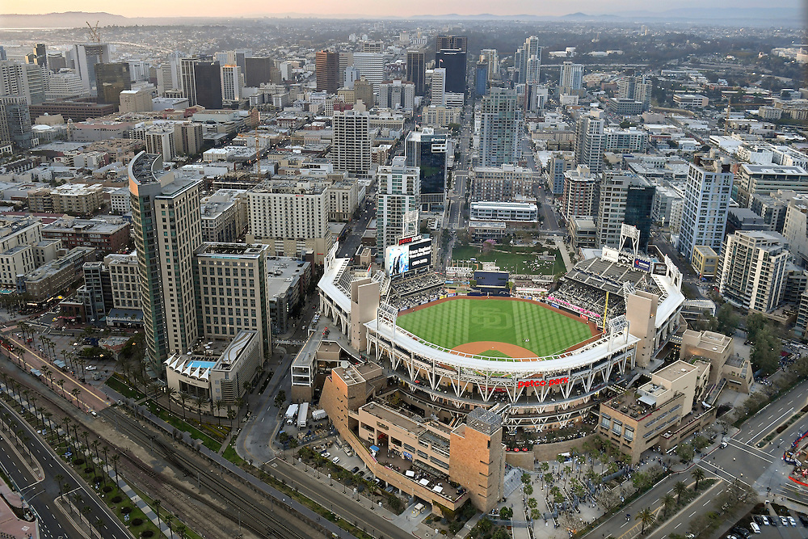
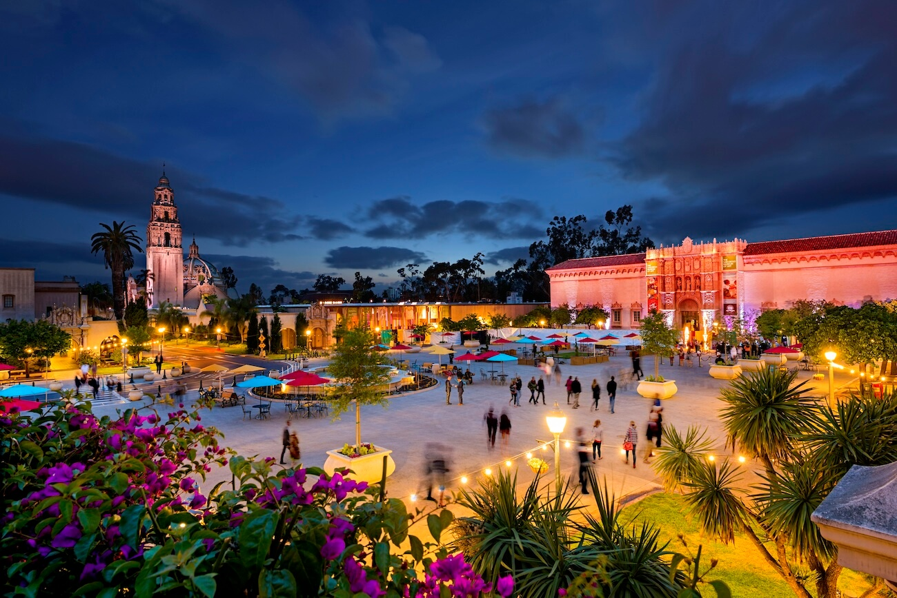

Petco Park
Petco Park is a state-of-the-art baseball stadium located in downtown San Diego, serving as the home of the San Diego Padres MLB team. Beyond its primary function as a baseball venue, it's a versatile events center that hosts a wide array of activities, including major concerts by world-renowned artists, college football bowl games like the Holiday Bowl, and even unique events like golf courses built into the outfield.
Sunset Cliffs

Sunset Cliffs Natural Park is a breathtaking 68-acre coastal park stretching along the western edge of Point Loma in San Diego. It's famous for its dramatic, intricately carved coastal bluffs, arches, and sea caves, offering panoramic views of the Pacific Ocean. As its name suggests, it's a premier spot for watching spectacular sunsets, but also popular for surfing, tide pooling during low tides, whale watching during migration seasons, and enjoying leisurely walks along its rugged cliffside paths that showcase native coastal sage scrub habitat.
Balboa Park
Balboa Park is a sprawling 1,200-acre urban cultural park in San Diego, renowned for its stunning Spanish Colonial Revival architecture, lush gardens, and diverse collection of museums. Beyond being home to the world-famous San Diego Zoo, it features institutions like the Fleet Science Center, San Diego Museum of Art, and Japanese Friendship Garden, offering something for every interest. Visitors can explore a rich tapestry of art, science, nature, and history, often enjoying free outdoor concerts at the Spreckels Organ Pavilion or simply strolling through its many themed gardens and trails.